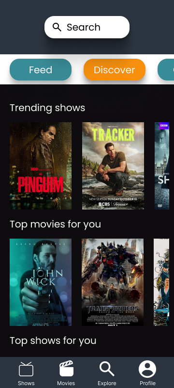

Letterboxd App Concept
A UI/UX Design for a movie social discovery application.
Prototipe Interaktif
Anda bisa klik, scroll, dan berinteraksi dengan prototipe di bawah ini.
Tentang Proyek Ini
Proyek ini adalah eksplorasi desain ulang untuk aplikasi Letterboxd, dengan fokus pada penyederhanaan alur pengguna dan modernisasi antarmuka. Tujuannya adalah untuk menciptakan pengalaman yang lebih intuitif bagi pengguna dalam menemukan film baru, membaca ulasan, dan berinteraksi dengan komunitas. Desain ini dibuat menggunakan Figma dengan memperhatikan prinsip-prinsip desain UI/UX modern.
Tampilan Lainnya
